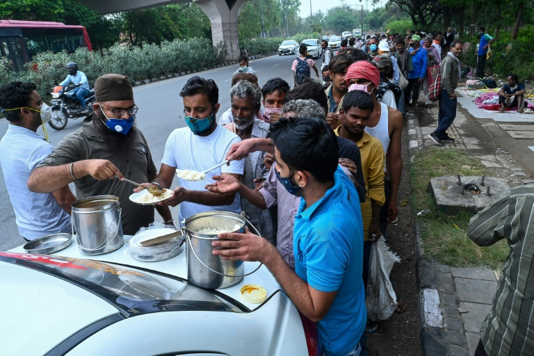

Problema
A escassez de alimentos é um problema global que afeta muitas regiões com falta de acesso a alimentos básicos, como arroz, trigo e milho. Mudanças climáticas e desastres naturais agravam esse problema, prejudicando a produção agrícola e diminuindo a disponibilidade de alimentos. Abordagens inovadoras e sustentáveis são necessárias para garantir a segurança alimentar e mitigar os impactos da escassez de alimentos em comunidades vulneráveis.
De acordo com dados divulgados pela Organização das Nações Unidas para a Alimentação e Agricultura (FAO), aproximadamente 828 milhões de pessoa enfrentaram situações de fome em 2021. Além disso, mais de 2,3 bilhões de pessoas experimentaram níveis de insegurança alimentar moderada ou grave no mesmo ano.

Solução
A agricultura enfrenta desafios significativos, como escassez de recursos e
mudanças climáticas. Para enfrentar esses desafios e otimizar essas lavouras
aumentando sua eficiência , o uso de sensores e a automatização na agricultura tem
se mostrado uma abordagem promissora.
Distribuição
Com esta solução, alcançaremos uma maior eficiência nas lavouras, o que, por sua vez, contribuirá para uma melhoria significativa na distribuição de alimentos. Por meio do auxílio de distribuidoras, facilitaremos a chegada de alimentos em zonas mais remotas, tornando o processo de distribuição mais eficaz e garantindo o acesso a alimentos nessas áreas.
Beneficios
Os benefícios da utilização de sensores e automatização na agricultura são: maior eficiência, redução do desperdício de recursos, tomada de decisões mais informadas, aumento da produtividade, otimização dos insumos, sustentabilidade na produção de alimentos e enfrentamento dos desafios da escassez de recursos e mudanças climáticas.
Projeto
Os sensores são dispositivos que coletam dados em tempo real sobre variáveis agrícolas, como umidade do solo, temperatura e crescimento das plantas. Esses dados são analisados por sistemas de inteligência artificial, fornecendo informações valiosas aos agricultores.
Alguns Sensores que serão ultilizados:
- Sensores de umidade do solo e do ar
- Sensores de fluxo de agua
- Sensores de solo NPK
- sensores de luminosidade